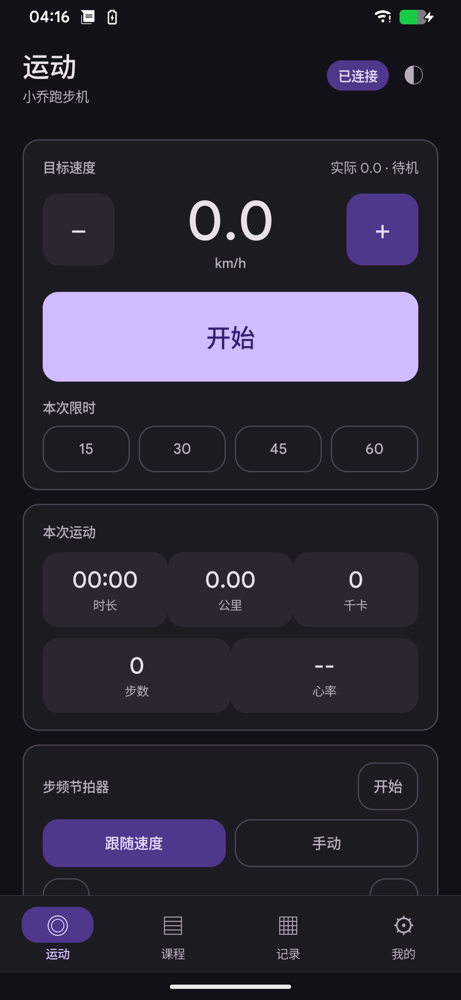

小乔跑步机 App 停服了？
用一个离线 App 继续跑
官方「小乔快跑」连不上、登录不了，机器本身却没坏。小乔跑跑用逆向还原的局域网协议直接控制跑步机——无账号、无云端、不依赖厂商服务器。

局域网直连
UDP 19032 自动发现、TCP 12304 控制，不经过任何服务器。断线自动重连。
课程与沉浸页
7 门 K1–K4 课程，也可用一句话自定义。运行中显示超大速度、本段剩余与下一阶段。
离线语音播报
115 句内置中文音频，开场、分段、完成全程播报，完全不走系统 TTS。
运动记录
日历热力图与明细统计，数据只存手机本地，没有账号也没有遥测。
配网向导
还原 ESP-Touch v2，让跑步机重新连上 2.4 GHz WiFi，不需要官方 App。
零依赖
纯 Java + Android SDK，无 AndroidX、无 Material、无 Gradle 依赖，源码可直接审阅。
常见问题
关于官方 App 失效、型号兼容与安全性的说明
小乔跑步机官方 App 还能用吗？
取决于厂家服务器是否仍在运行。本项目不修改、不冒充官方 App。官方 App 一旦无法登录或连不上设备，本项目的 App 仍可通过局域网直连控制跑步机。
小乔跑步机 App 连不上、登录不了怎么办？
先确认手机与跑步机连同一个 2.4 GHz WiFi。如果跑步机面板仍能开关机、调速，说明机器本身正常；官方 App 卡在登录或加载，通常是服务器侧失效——这部分无法修复，只能改用本地控制方案。
支持哪些型号？我的是别的型号能用吗？
目前只在一台小乔 SmartRun 上做过完整实测（factory=1 / model=13 / WiFi 固件 30）。原厂 App 里能看到多型号框架，但其它型号的帧长、字段偏移、速度上限都没有验证。不同型号请先抓广播与状态帧核对协议，再空载试控制命令。
需要拆机、刷固件或者改硬件吗？
都不需要。协议走 WiFi 局域网。本项目也刻意不碰固件升级通道——刷坏无法恢复。
配网（让跑步机连 WiFi）怎么做？
还原的是 ESP-Touch v2（乐鑫 SmartConfig）。跑步机待机时长按面板「−」键 5 秒进入配网态，然后用项目里的配网工具发送 WiFi 账号密码。ESP 模块只支持 2.4 GHz。
运动数据存在哪里？会上传吗？
全部存在手机本地，没有账号、没有云同步、没有遥测。卸载 App 会一并删除记录，重要数据请用分享卡导出。
为什么只有 Android，没有 iOS？
iOS 不允许普通应用做 ESP-Touch 所需的底层 WiFi 帧注入，也限制长连接后台运行。Android 侧没有这些限制。
安全须知
off 是切断动力，不是暂停。真人在跑带上时不要用它当暂停键。务必夹好物理急停夹 / 安全锁。不要触碰固件升级通道。